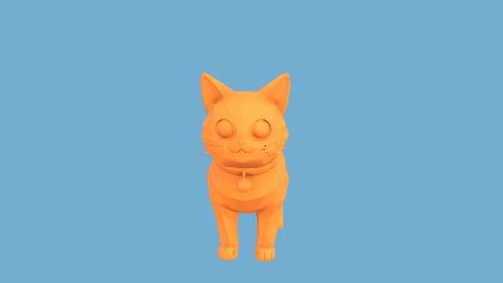
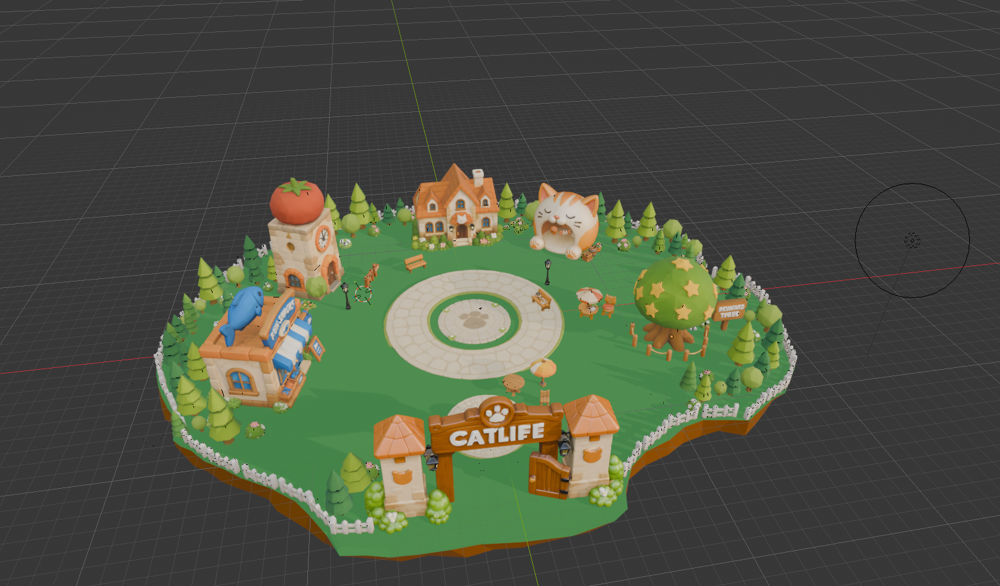
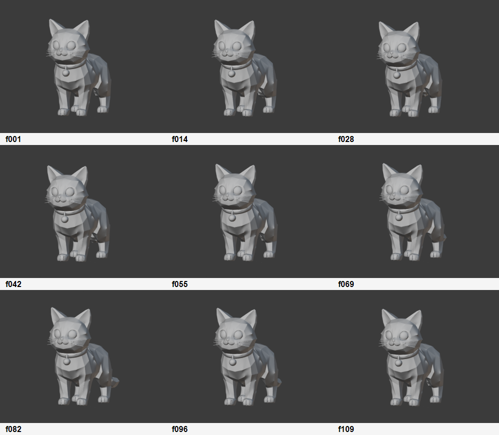
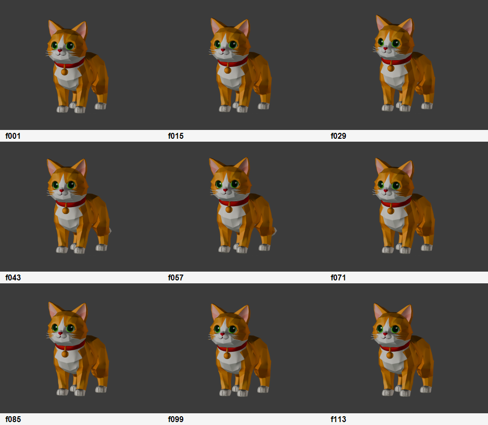
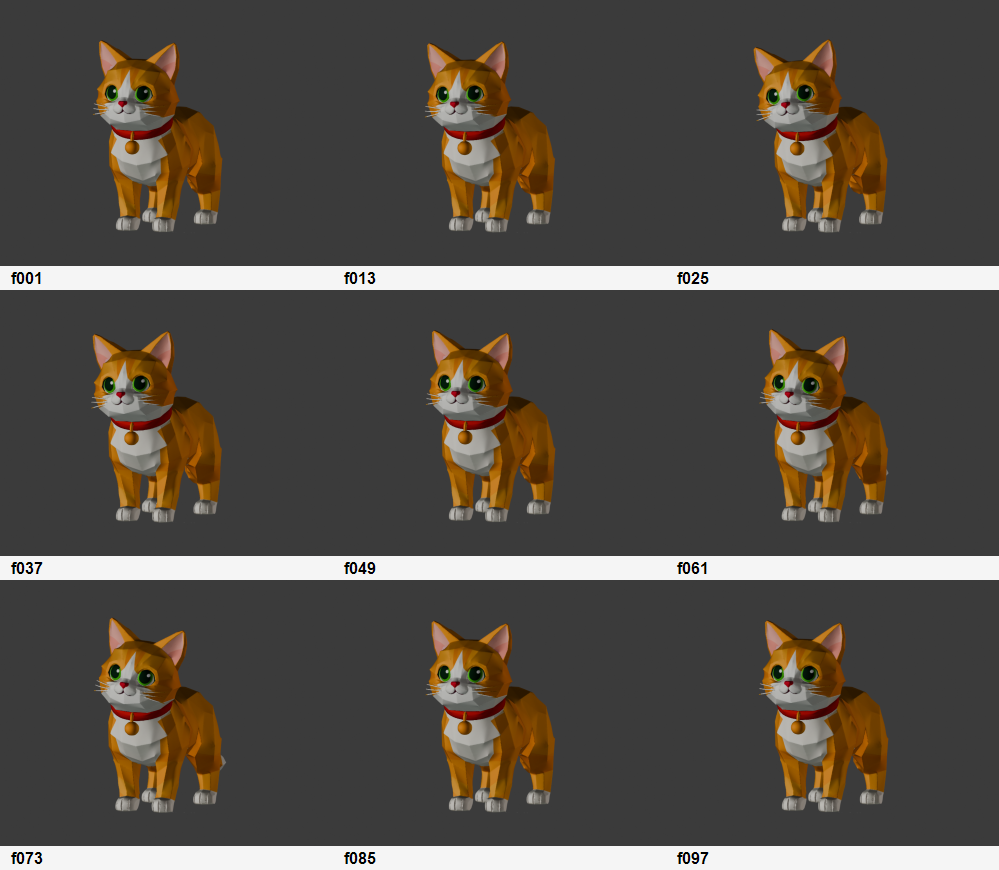
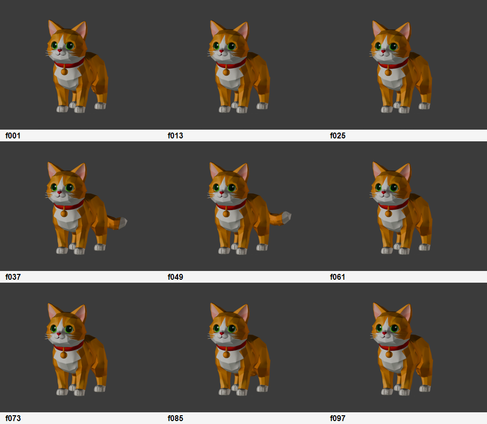

Current Visual Evidence

Unity Evidence
Animated cat visible in Game View
Use as proof that the cat handoff reached Unity. Replace with APK footage for final video.

Target Visual
Town overview target
Use for poster/PPT visual direction. This does not prove final Unity runtime integration yet.
State Animation Placeholders

Normal
IdleBreath
Default calm state for normal mode and low-interruption presence.

Transition
CuriousSniff
Focus-entry transition cue: the cat notices the user's shift toward focus.

Focus
HeadTiltListen
Quiet feedback state for listening and low-noise companionship.

Reward
TailWagHappy
Session completion reward cue for the closing beat of the demo video.
Demo Timeline Draft
01 Town5-8s. Show CatLife world and visual tone.
02 Cat5s. Establish the companion as the product anchor.
03 Normal8s. Idle state before focus starts.
04 Transition8s. Move from distraction to focus entry.
05 Focus10s. Quiet mode, low-interruption feedback.
06 Reward8s. Completion response and product payoff.
06-deliverables/final-submission/CatLife_submission_check_20260705.md.